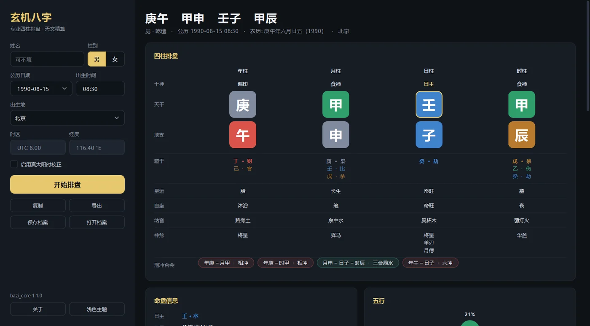
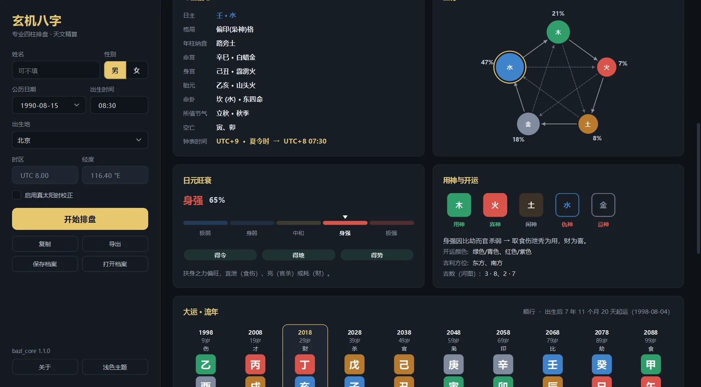
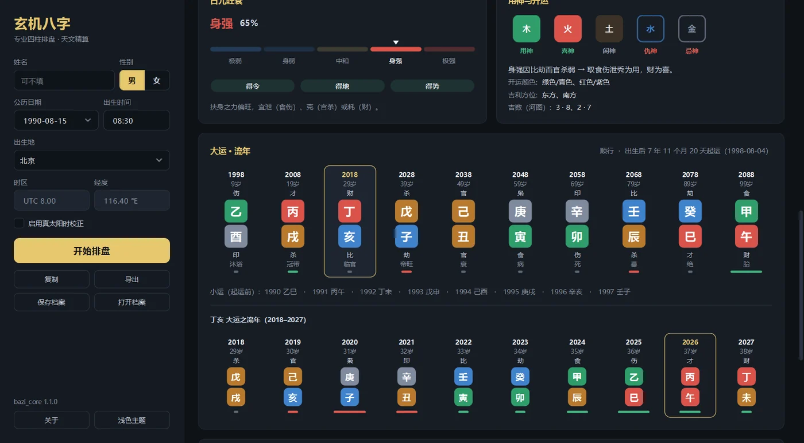

AuraLink Studio / 玄机八字
玄机八字
Four Pillars, in Chinese.
The edition for readers of Chinese: the same charting, with the traditional terminology in Simplified Chinese and UTC+8 as the default time zone. Enter a birth date, time and place and you have the four pillars, hidden stems, ten gods, strength, five elements, useful god, and the luck and annual pillars.

Six places charts usually slip. Not here.
Charting software mostly agrees on ordinary cases and differs on just a few. These are those few.
- Born after 11pmA birth between 23:00 and 23:59 already belongs to the next day for the day and hour pillars, and the chart says which half of the zi hour it is. This is where a lot of software silently takes the calendar date instead.
- Born on the day a solar term turnsThe turning moment is worked out to the minute, so someone born close to the boundary doesn't get the wrong year or month pillar.
- Matches the almanacThe 2024 Start of Spring comes out at 16:27 — exactly as the astronomical almanac has it. Check any date you like against it.
- Right for births far back in timeFrom the year 1000 to 2150, someone born centuries ago still gets the correct day pillar, undisturbed by historical calendar reforms; dates that never existed (5–14 October 1582) are flagged.
- True solar time, if you want itOptionally correct for the longitude of the birthplace, for those who work that way — off by default, never forced on you.
- Strength you can argue withStrong or weak is scored from the birth month, the day branch, rooting, support and the combinations and clashes — on a five-level scale with a percentage — and the useful, favourable, idle, hostile and unfavourable elements are ranked from that.
From the chart to a lifetime of luck.
Version 1.1 rebuilds the calculations and the whole interface: luck, annual and minor pillars; combinations and clashes that really shift the five-element balance; historical clocks by birthplace; and a Chinese lunar calendar checked day by day across 72,684 days.
- Luck · annual · minor pillarsTen luck pillars, forward or backward, with the starting age worked out to the hour; the annual pillars inside each, with the current period and year highlighted.
- Combinations and clashes that countStem combinations (transforming or not), six combinations, three harmonies, half combinations, directional combinations, clashes, punishments, harms and breaks — and they change the five-element scores, not just a list.
- Five-level strength, follow patterns, ranked useful godFrom extremely weak to extremely strong, with in season / rooted / supported; follow patterns and Moistening Down recognised; useful, favourable, idle, hostile and unfavourable elements fully ranked, with climate adjustment.
- Historical clocks by birthplacePick a birthplace from 38 Chinese cities and the longitude and the clock in force at the time fill in: China's 1986–1991 daylight saving, and local mean time for older dates.
- A lunar calendar checked day by dayChinese lunar dates recomputed from new moons and principal solar terms, leap months included, on each period's calendar meridian (Beijing local mean time before 1929); compared with a reference calendar library over 50,000 charts and 72,684 lunar days — zero differences.
- Stars, palaces and nayinNobleman, Academic Star, Peach Blossom, Travelling Horse, Canopy and more, plus void branches, the Life and Body palaces and the Conception pillar; nayin and life stage for all four pillars.


One click, enough to read from.
The full chart table
Ten gods, stems, branches, hidden stems, life stages, nayin, symbolic stars and combinations for all four pillars — coloured by element, with the day master marked.
Hidden stems & ten gods
Every branch opens into its hidden stems with the matching ten gods, set right under the pillar so it reads in one pass.
Day-master strength
A five-level gauge from extremely weak to extremely strong, with a percentage and the reason — in season, rooted, supported.
Five-element distribution
A generating / controlling pentagon with each element's share, from weighted scores — not a raw count of characters in the chart.
Nayin · palaces · Eight Mansions
Nayin for every pillar, the Life and Body palaces, the Conception pillar, void branches, and the East / West group destiny trigram.
PNG, PDF & saved profiles
Export the chart as a PNG image, a PDF or text to print and share; save each person's profile and open it again any time.
Install it and you're charting.
Download the installer, run it, then pick up a free activation key over Telegram — about a minute all in. Once activated it keeps working with no internet connection at all.